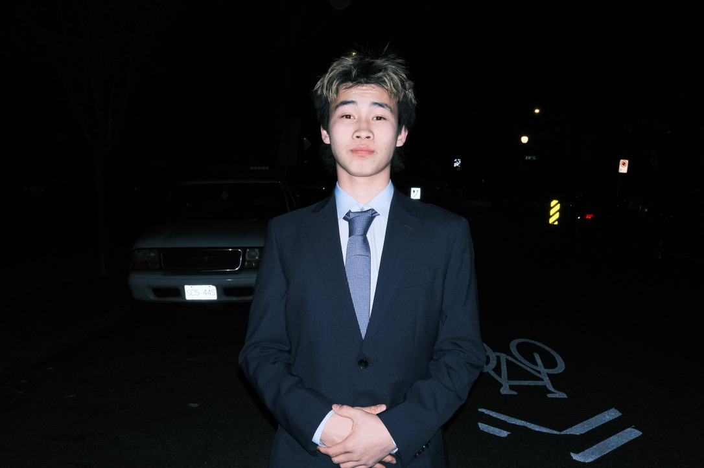
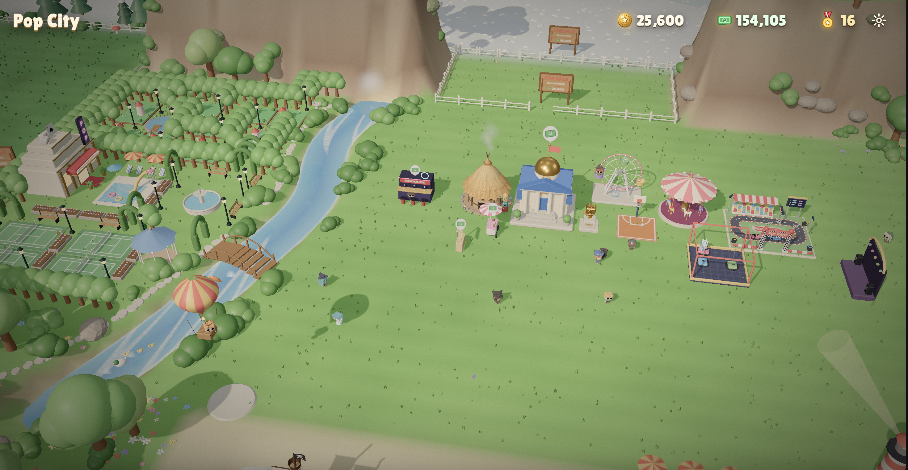
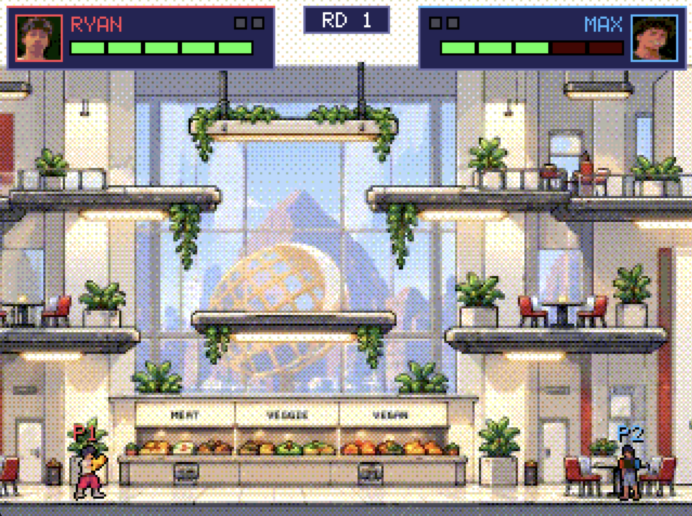

Ryan Zhang
Computer Science student at the University of British Columbia, graduating May 2029.
- Based in
- Vancouver, BC
- GPA
- 93.4%
- Work authorization
- Canadian citizen
- Available from
- May, 2027
Selected projects
-

Pop City
A 3D city-building and adventure game that runs in the browser, with all graphics, animation and audio generated in code. Game systems include a deterministic kart-racing mode and a gacha draw system, covered by unit, simulation and Playwright UI tests.
Took large scenes from 5 to 72 fps by merging geometry, batching draw calls and adding level of detail.
-

Arcade Fighter
A 1v1 fighting game for a physical arcade console built on a Raspberry Pi Pico 2W. I led the team of four: running design meetings, splitting the work between hardware and software, and defining the interfaces between the controller, console firmware and game logic.
The game is written in C11 around tight hardware limits, so every game state is static with no dynamic memory. A desktop simulator built on SDL2 runs it with keyboard input, so we could test before loading it onto the hardware.
-
Blackjack
A CPSC 210 course project I kept extending well beyond the requirements. The game logic is object-oriented and test-driven, with the relationships between classes designed to keep coupling to a minimum.
Experience & education
-
Sep 2026 – Present
Medical Device Software Developer
Kardium Inc., Burnaby, BC
- Develop and maintain code in a large Java codebase (Swing, FlatLaf) for complex medical device software.
- Scope features into work items and write implementation plans before development, as part of agile sprint planning and delivery.
- Take part in code reviews, debug issues, and write and maintain automated tests.
- Use Git and Claude Code in a professional team workflow.
-
May – Aug 2026
Research Assistant
University of British Columbia, Vancouver, BC
- Extended a formal E-matching instantiation termination framework for SMT solvers.
- Analyzed matching-loop behaviour in axiomatized theories and identified four sequence-theory failure modes, each with a proposed fix.
- Wrote up the notation, definitions and worked examples, and presented the results in technical talks and on a large-format research poster.
-
Oct 2025 – Nov 2026
Software Engineer
The Cornerstore, Vancouver, BC
- Designed and developed a REST API from business requirements using test-driven development (SQL, Python, JavaScript).
- Contributed to the overall architecture design and worked in agile sprints, from planning to delivery.
-
Sep 2025 – May 2026
Computer Science Teaching Assistant
University of British Columbia, Vancouver, BC
- Led CPSC 210 labs on object-oriented design, data structures and test-driven development, with frequent feedback and consultations for students.
- Worked with professors and fellow TAs to improve the course structure and tailor lessons for students.
-
Sep 2024 – May 2029
B.Sc. Computer Science
University of British Columbia, Vancouver, BC · Expected graduation May 2029
- GPA 93.4%. Key courses: CPSC 210, software design and construction (95%); CPSC 213, computer systems (96%); CPSC 221, algorithms and data structures (97%).
- Dean’s Scholar and Trek Excellence Scholarship (top 5%), 2025; Presidential Scholar Award, 2024.
- AWS Certified Cloud Practitioner, July 2025.
Let's talk.
I’m looking for a software engineering co-op starting May 2027. Email is the fastest way to reach me.